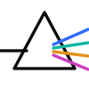
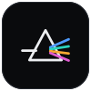

Seer is a precision instrument for on-chain intelligence. The brand is built like one — graphite and hairlines, a single voltage running through it, and a prism that resolves market noise into clear signal.
A prism: white light enters, the signal spectrum emerges. The mark is the product — Seer turns noise into a reading.


Graphite surfaces, one voltage, and a four-hue signal spectrum. Voltage lives outside the spectrum — it's Seer's voice, never a reading.
Two voices. Archivo for everything human; JetBrains Mono for everything the machine measured.
Crisp corners, mono labels, voltage reserved for the one action that matters. Built to read on a trading desk at a glance.
Three top-cohort wallets opened positions in the MNT/USDC pool within nine minutes. Early rotation, not noise.
How the system stays itself as it grows.
Dense, precise, legible at a glance. Hairlines over boxes, data over decoration. Every pixel earns its charge.
Never assert without showing the read — wallets, confidence, timing. The spectrum codes what kind of signal; the copy proves it.
Voltage marks the single most important action on screen. If everything glows, nothing does.